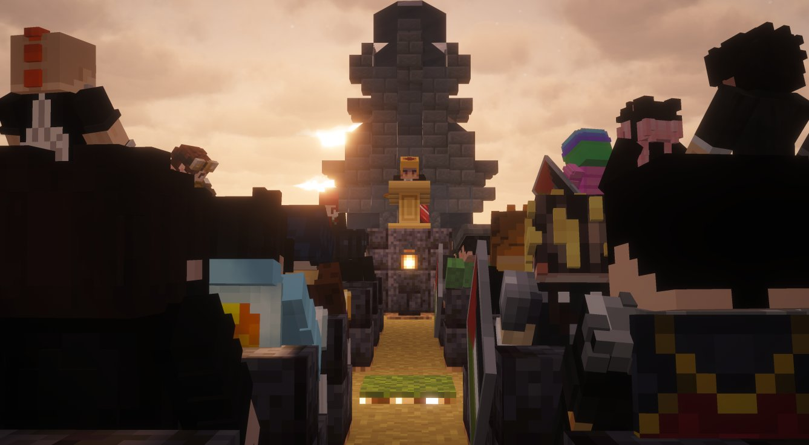

Boo assassiné : le Happy Ghast bien-aimé tué de sang-froid
Un crime brutal secoue le territoire. Le Happy Ghast des Belazur aurait été kidnappé puis assassiné par Alan Leonhart. Une prime de 35 005 KCOINS est annoncée.

Le territoire du Karmine est sous le choc. Boo, le Happy Ghast bien-aimé de la famille Belazur, aurait été kidnappé puis assassiné de sang-froid par un certain Alan Leonhart. L'affaire, relayée par plusieurs témoins, a provoqué une vague d'indignation sans précédent dans la communauté.
Selon les informations recueillies par la rédaction, les faits se seraient déroulés dans des circonstances encore floues. Ce qui est certain, c'est que Boo — connu de tous pour sa présence bienveillante et son caractère attachant — n'est plus. Et que les Belazur, dévastés, réclament justice.
"Ce qu'il a fait est impardonnable. Boo était innocent. Alan Leonhart répondra de ses actes."
— La famille Belazur
Avis de recherche : Alan Leonhart
Les Belazur ont officiellement lancé un avis de recherche contre Alan Leonhart, désormais considéré comme dangereux. Une prime de 35 005 KCOINS est offerte à quiconque fournira des informations permettant de le localiser ou de le neutraliser.
Toute information doit être transmise directement aux Belazur. Le Karmine Déchaîné rappelle que la justice populaire ne doit pas se substituer aux autorités compétentes — mais que la vérité, elle, ne peut rester enterrée.
Un refuge naît des cendres du drame
Alors que le territoire panse ses plaies, une lueur d'espoir émerge du deuil. Lady Lumière, touchée par la mort de Boo, a annoncé la création d'un refuge pour animaux afin que plus aucune créature ne subisse un sort aussi cruel. Le projet bénéficie du soutien financier de Magnus, dont la générosité a permis de lancer l'initiative sans attendre.
Le Karmine Déchaîné salue cette démarche et suivra de près l'évolution du refuge dans ses prochaines éditions.